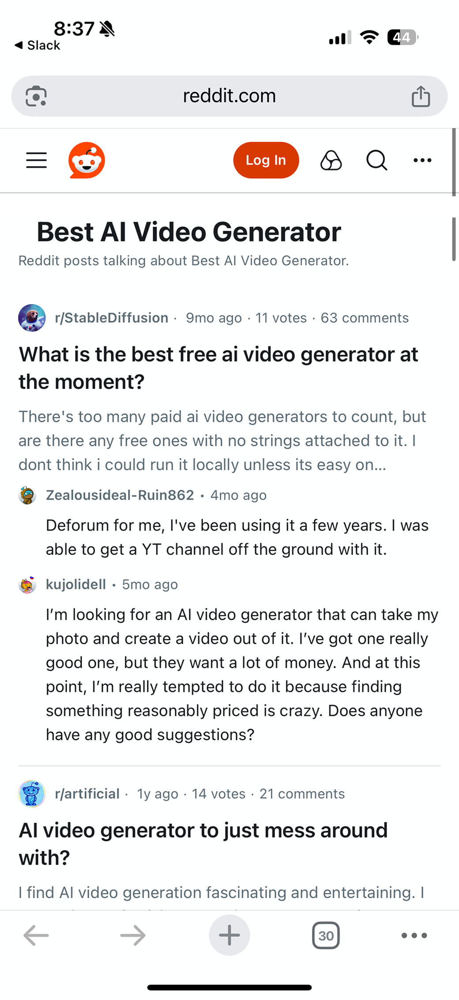

Above Threshold

AI synthesis visible above fold with citations
Source posts available below
Below Threshold

Synthesis suppressed when confidence was too low
Source posts became the fallback experience